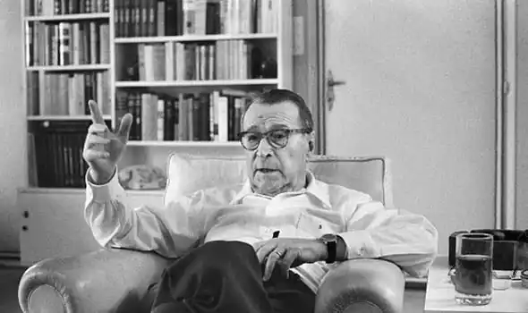

СІМЕНОН, Жорж (Simenon, George — 13.02.1903, Льєж — 04.09.1989, Лозанна) — французький письменник.Сіменон народився у бельгійському місті Льєж у сім'ї бухгалтера. Після смерті батька він працював продавцем у книжковому магазині, репортером у місцевій газеті. Сім'я Сіменона не була заможною, тому його мати, Анрієтт Брюль, котра до заміжжя працювала продавцем в універсамі, здавала внайми кімнати студентам.
Літературну діяльність розпочав як журналіст і письменник "розважального" жанру. Замолоду багато мандрував, регулярно публікував подорожні нотатки і нариси про Європу та Африку. С. почав публікуватися у 1921 p., і його тодішні твори фахівці класифікують як "паралітературу". Провідними у романах Сіменона того періоду є теми еротики і галантних взаємин між коханцями. Цим книгам властиві надуманість ситуацій і психологічних мотивацій, брак конфлікту і яскравих літературних типів. Нерідко Сіменон писав ці романи у гумористичному нурті, завжди ховаючись під псевдонімом. Із 1923 до 1931 pp. Сіменон написав 181 розважальний роман, 1075 оповідань для дорослих і 150 — для дітей. Згодом письменник зізнався: "Мене такі романи навчили того, як не слід писати". У 1922 р. Сіменон одружився зі своєю землячкою і художницею Тіжі. Друга світова війна застала Сіменона у Франції. Влітку він замешкав із дружиною і народженим у квітні первістком Марком у селищі Ніель-сюр-Мер і пробув у Франції всю війну. Восени 1945 p. Сіменон вирушив у Нью-Йорк, де його творчість добре знали і де він одразу став "модним" письменником. Коли виникла необхідність у послугах секретарки, Сіменону порекомендували 20-літню канадійку Деніз Віме, у яку він закохався з першого погляду. На той час письменник уже давно фактично не жив із дружиною. З неабиякими труднощами домігшись від дружини згоди на розлучення, Сіменон оформив шлюб із Деніз. В Америці у них народилися син Джонні та дочка Марі-Жорж.
У 50-х pp. до Сіменона прийшла світова слава: його обрали членом Бельгійської Академії, його твори мали незмінний успіх. У 1957 р. письменник разом із сім'єю оселився у невеликому швейцарському містечку Епаленж, що неподалік від Лозанни, щоби розпочати "нове життя" — тихе, усамітнене, спокійне. Проте у травні 1978 р. Сіменона спіткало велике горе: звела рахунки з життям 25-річна дочка Марі-Жорж. До самогубства її підштовхнула не лише успадкована по материнській лінії невиліковна хвороба, а й гнітюча атмосфера у сім'ї, спричинена виходом книжки "спогадів" Деніз Сіменон, котра хворіла на важку форму шизофренії. Сіменон після смерті дочки прожив ще одинадцять років і помер у Лозанні у віці 86 років. Всесвітню славу Сіменон здобув на ниві детективної белетристики. У 1932 р. видавець А. Файяр уклав з Сіменоном контракт, за яким письменник зобов'язався створити серію книг про Мегре. Цикл відкривається романом "Петерлатиш" ("Pietr-le-Letton", 1931). І невдовзі комісар Мегре став одним із найвідоміших героїв сучасної літератури. З Мегре, як стверджує С, починається "народний роман", який не зважає на індивідуальність автора, а відповідає комерційному попитові і створюється конвеєрним методом. Почасти саме цим пояснюється легендарна "плодючість" Сіменона, котрий протягом життя написав майже п'ятсот творів. Траплялося, що зарік письменник видавав до десятка романів. У серії книг про комісара Мегре Сіменон не прагнув сягнути літературних вершин і навіть заперечував свою причетність до детективного жанру: "Я не вважаю себе письменником детективних романів, адже ніколи не дотримувався їхніх правил. У моїх книгах з самого початку відомо, хто скоїв злочин. Мегре менше цікавить, хто вбив, він прагне дізнатися, чому вбивця зважився на такий крок". Мегре має свою біографію і характер. У романі "Справа Сен-Фіакр" Сіменон повідомляє, що комісар народився у Центральній Франції, що батько Мегре був управителем замку. Юний Мегре мріяв про кар'єру лікаря, але через нестатки був змушений влаштуватися на роботу в поліцію. Згодом Мегре опиняється в Парижі, де й здобуває славу видатного криміналіста. Кабінет комісара на набережній Орфевр став місцем, у якому розслідувалися найкарколомніші злочини. Проте, на відміну від популярних літературних нишпорок, Мегре ніколи не діє зопалу — він уникає відчайдушних кроків навіть заради розкриття злочину. Комісар завжди намагається зрозуміти, що змушує респектабельного і добропорядного громадянина порушити закон. Персонажі Сіменона мають доволі складну психологію. Як і Шерлок Холмс, Мегре створив власний метод розкриття злочинів. Він намагається проаналізувати події з позицій злочинця, вивчає його дитинство та юність, його звички та "комплекси". Нерідко герої Сіменона одержимі прихованими маніями, що змушують їх "руйнувати" усталені соціально-етичні норми. Але Сіменон — не холодний клініцист, він завжди співчуває злочинцеві, і це особливо імпонує читачам. Відтак письменникові вдалося піднести "поліцейський" роман до висот серйозної літератури, зробити його "високим жанром" завдяки майстерному поєднанню захопливості та психологічної глибини. Так, у романі "Мегре і вбивця" ("Maigret et le tueur") розповідається про злочин, який колись скоїв страховий агент Робер Бюро. Він розкаюється у скоєному, проте найбільше побоюється можливості повторення подібного злочину. Герой хотів би звернутися до лікаря-психіатра, але у нього виникають деякі сумніви. Лікарям він не вірить. Урешті-решт, суд засудив Бюро до тривалого ув'язнення, замість того, щоб лікувати його як хвору людину. Певна річ, Сіменон не завжди одразу називає вбивцю або злочинця. Нерідко він тримає читача у напруженні до останньої сторінки твору. Так. у романі "Мегре ставить тенета" ("Maigret tend tin piege", 1973) сюжет розвивається вельми динамічно, і лише у фіналі стає зрозуміло, хто і навіщо вбиває самотніх жінок у кварталі Мон-мартр. Загалом Сіменон написав близько 80 романів про Мегре. Про популярність героя-детектива свідчить хоча би той факт, що ще за життя письменника у місті Делфзейл Мегре був споруджений бронзовий пам'ятник із вибитим написом: "Мегре Жуль, народився у Делфзейлі 20 лютого 1920 р. Батько — Жорж Сіменон, матір невідома". Дослідники поділяють творчість Сіменона на дві частини: романи про Мегре і "не про Мегре". Саме в останніх Сіменон намагався виявити свій художній талант. Більшість книг "не про Мегре" є своєрідними психологічними "етюдами звичаїв". Якщо в книгах про комісара С передусім дбає про захопливість, то в інших своїх творах він втручається в царину роману побутового і психологічного. Втім, між романами першої і другої групи не існує нездоланної межі. Поведінка всіх героїв Сіменона залишається соціально і психологічно детермінованою. Вони переконливі у всіх своїх виявах. Саме це і не дозволяє зарахувати Сіменона до численної групи суто розважальних, масових літераторів. Окрім власне романів, Сіменон писав і автобіографічну прозу: "Я згадую" ("Je me souviens", 1945), "Педіґрі" ("Pedigree"), "Особисті спогади, доповнені "Книгою Марі Жо" ("ties"Memoires intimes. suivies du Livre de Marie Jo"). З огляду на канони детективного жанру, Сіменон у своїх романах уникає детальних описів, ліричних відступів, картин природи. Деякі дослідники навіть писали про "нульовий градус письма" Сіменона. Це визначення передусім стосується мови письменника. Сіменон ретельно добирає лексику, вона завжди вельми конкретна, а її обсяг незначний. Ці особливості могли би свідчити про бідність мови письменника, якби не його вміння вибирати з-поміж звичайних слів найвлучніші і найнеобхідніші формулювання. Сіменон зарекомендував себе і як справжній майстер побудови інтриги. Зав'язка здебільшого подається на першій сторінці книги і розв'язується в її останньому абзаці, що дозволяє тримати читача у постійному напруженні. Саме тому романи Сіменона перекладені практично всіма мовами світу й відомі у будь-якій країні. Серед найвідоміших романів Сіменона можна назвати "Дім на каналі" ("La Maison du canal"), "Вдова Кудерк" ("La Veuve Couderc"), "Тітка Жанна" ("Tante Jeanne"), "Залізна драбина" ("L'Escalier de fer") й ін.